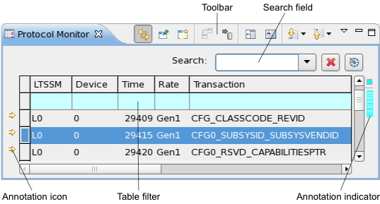
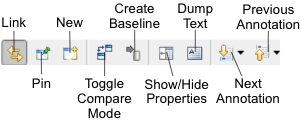

Protocol Monitor view
The Protocol Monitor view displays a tabular overview of the results of one or more protocol monitor tests.
A Protocol Monitor view is opened by choosing from the shortcut menu of a Test summary tab, raw data view, or Stream data view when a test suite result with the type Protocol is selected. It can also be opened using the New button (see below) from the toolbar of another scan view chart or using the menu command.

In addition to the columns describing each protocol entry, a Protocol Monitor view contains a toolbar, search field, configurable annotations in the left and right margins, and it has a shortcut menu:
These are the elements in the main area of the chart (for the toolbar and shortcut menu, see below):
- Toolbar: The action buttons of the chart. See the Toolbar section, below, for details.
- Search field: This field lets you find row in the table that contain particular data.
All fields that match the search term are highlighted. Text fields match when they begin with the search term; the search is case sensitive. (That is, searching for "test" finds a field beginning with "test" but not a field beginning with "Test" or "TEST".) Number fields match when they are equal to the search term. You can click the Configuration button (see below) to omit columns form the search.
There are two buttons beside the field:
- : Clicking this button empties the search field.
- : Clicking this button lets you configure which columns are searched and included in comparisons when the comparison mode is active. (The comparison mode is controlled by the Toggle Compare Mode toolbar button described below.)
Toolbar

The toolbar of a Protocol Monitor view includes these buttons:
- Link: Links the display in the view to the selected row in the data navigation view.
In this mode, if the selection in the data navigation view changes, the display updates automatically.
- Pin: Freezes the display in the view.
In this mode, the view keeps displaying the rows it currently displays, even when the selection in the data navigation view changes. Dynamic updating can be resumed by clicking the Link button.
- New: Creates a new Protocol Monitor view.
- Toggle Compare Mode: Switches the comparison mode on and off. In comparison mode, all cells
in the current table are highlighted that are different from the corresponding cells in the
stored baseline. Only columns selected in the Search Configuration dialog (opened by clicking
the button) are included in the comparison.
This button is available only when a baseline has been established by clicking the Create Baseline button.
- Create Baseline: Stores the current data as the base for comparing any changes when the comparison mode is active.
- Show/Hide Properties: Displays information on the trigger, setup, and payload for the currently displayed row.
- Dump Text: Outputs the current content of the view as text to the console.
- Next Annotation: Selects the next row that contains an annotation (fail indicator or
alert).
The drop-down list of the button lets you check an uncheck the annotation types. If an annotation type is unchecked, SmarTest does not jump to this type of annotation.
For example, if Failed Test is not checked in the drop-down list, SmarTest jumps only to rows containing alerts.
- Previous Annotation: Selects the previous row that contains an annotation (fail indicator or
alert).
The drop-down list of the button lets you check an uncheck the annotation types. If an annotation type is unchecked, SmarTest does not jump to this type of annotation.
Table
The table in the Protocol Monitor view displays the data from the protocol monitor log entry that is in the frontmost data navigation view. Each row displays one transaction. Clicking any field in a row selects the entire row (for example, for copying it).
The table can be sorted by multiple columns, as described in Sorting tables.
The topmost row in the table (with a cyan background) is the table filter that lets you restrict which rows are displayed in the table by entering conditions. See Table filter for details.
A Protocol Monitor view table can contain these columns:
- Data Store: The data store in which this transaction is located,
This column is displayed only if the Protocol Monitor view contains transactions from multipla data stores.
- LTSSM: The state of the link training and status state machine during the transaction.
- Wafer: The number of wafer on which the test was executed.
- Site: The site on which the test was executed.
- Pin: The name of the tested pin.
- Device: The ID of the DUT.
- Time: The timestamp of the transaction.
- Rate: The established data rate for the connection during the transaction.
- Transaction: The ID of the transaction.
- Type: The transaction type.
- Request ID: The ID of the transaction request.
- Direction: The direction of the transaction, TX for downstream transactions, RX for upstream.
- Tag: The tag of the transaction.
- Address: The address of the transaction target.
- Cpl State: The completion state of the transaction.
- 1BE: The "first byte enable" setting for the transaction.
- LBE: The "last byte enable" setting for the transaction.
- ByteCount: The byte count of the transaction.
- LowAddr: The low address for the transaction.
- Bus: The number of the bus used for the transaction.
- Dev: The number of the PCI Express device used for the transaction.
- Fun: The function number of the transaction.
- Register: The register number of the transaction.
- Length: The length of the transaction, measured in double words.
- Payload: The first double word of the transaction payload.
If there is additional payload content, it can be displayed by clicking the Show Properties button in the toolbar.
Which columns are displayed and the order in which they are displayed can be set in the Protocol Monitor preferences.
Clicking a column title sort the table by this column in ascending order (rows with
smaller values come first). This is indicated by a triangle  . Clicking again sorts the table by the column in descending order, which is indicated by
an upside-down triangle
. Clicking again sorts the table by the column in descending order, which is indicated by
an upside-down triangle  . Clicking again unsorts the table. (The rows are displayed in the order in which they
occur in the data store.)
. Clicking again unsorts the table. (The rows are displayed in the order in which they
occur in the data store.)
Marks in the annotation and overview rulers
The left and right margins of the tab contain indicators for found cells and triggers.
The annotation ruler (the left margin) contains icons indicating rows with found or changed cells or with trigger matches:
- This icon indicates one of these conditions:
- The row contains a cell that matches the current content of the search field (see above).
- The row contains a cell that has changed compared to the comparison baseline. This annotation is displayed only if the comparison mode is active (see the description of the toolbar, above.)
- The transaction in this row matches the trigger condition specified in the test.
- The transaction in this row caused the trigger to fire.
- When a row is marked by multiple icons, these icons overlap.
You can disable the different annotation categories in the Annotations preference page. By default, all are enabled.
The overview ruler (right margin) contains a small colored rectangle for each row with an annotation. Clicking a rectangle selects the corresponding row in the table. Hovering over a rectangle with the mouse displays a tooltip with the reason for the annotation. Hovering over the small colored square in the upper right corner of the view displays a tooltip with the total numbers of annotations of the various kinds.
You can choose the colors in the Annotations preference page and disable any kind of indicator.
Shortcut menu
The shortcut menu of a Protocol Monitor view contains these commands:
- Copy: Copies the selected rows to the clipboard as tab-separated text.
- Width: This submenu includes the Autofit command that lets you make each column just wide enough to show all of its contents.
- Preferences: Opens the Protocol Monitor preference settings.
Functional changes
- Introduced in SmarTest 7.3.2